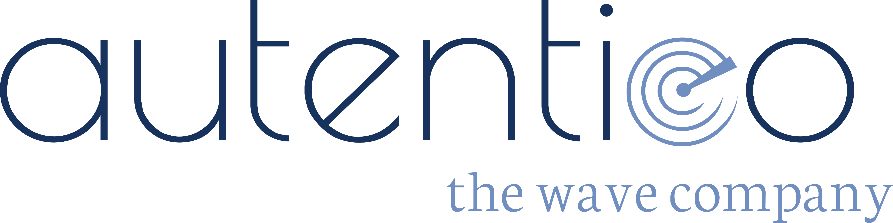

Full-stack developer with 3 years of professional experience building web solutions for product traceability and warehouse logistics based on NFC and RFID.
Thesis: locating livestock with a drone and BLE beacons

Notes on software, projects and what I'm learning.